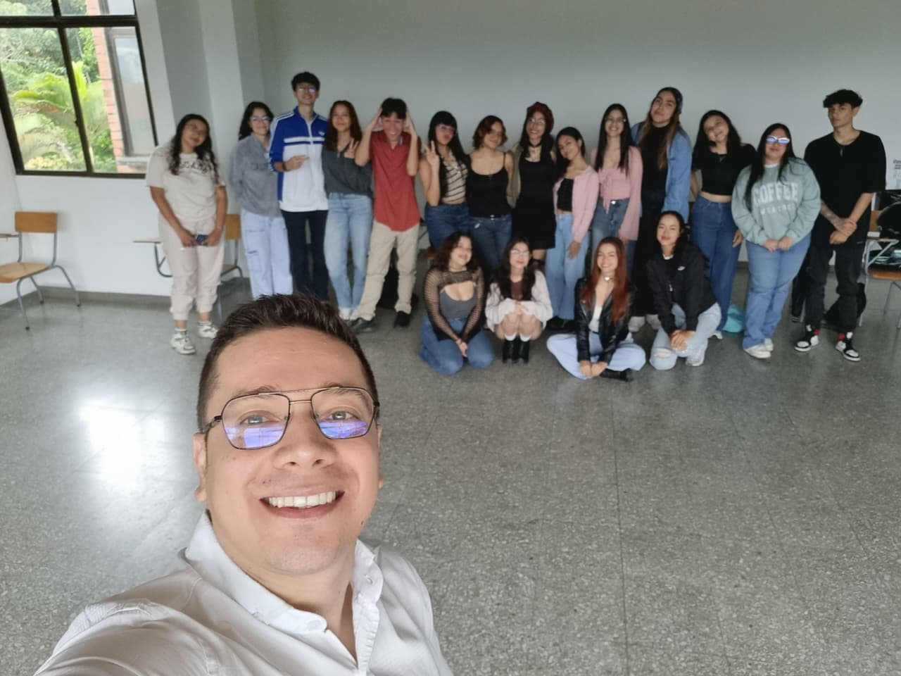

Oct 2025
Mi camino de la docencia al desarrollo
Cómo un profe de inglés terminó escribiendo código.
Cuando empecé a enseñar inglés en la Universidad Tecnológica de Pereira jamás pensé que unos años después iba a estar creando aplicaciones en React y estudiando Ingeniería Informática. Pero la docencia y el desarrollo tienen algo en común: resolver problemas y ayudar a la gente a aprender mejor.
Después de más de 10 años enseñando cursos como Discurso Académico, Inglés Avanzado y talleres de escritura, descubrí que podía llevar ese mismo enfoque a la tecnología. Empecé con HTML, JavaScript, luego React, y ahora estoy construyendo versiones en Next.js y trabajando para ser cada día mejor.
Este blog es parte de mi proceso en la materia Desarrollo de Aplicaciones en Red. Aquí documento lo que hago y cómo voy creciendo como developer sin dejar de ser docente.